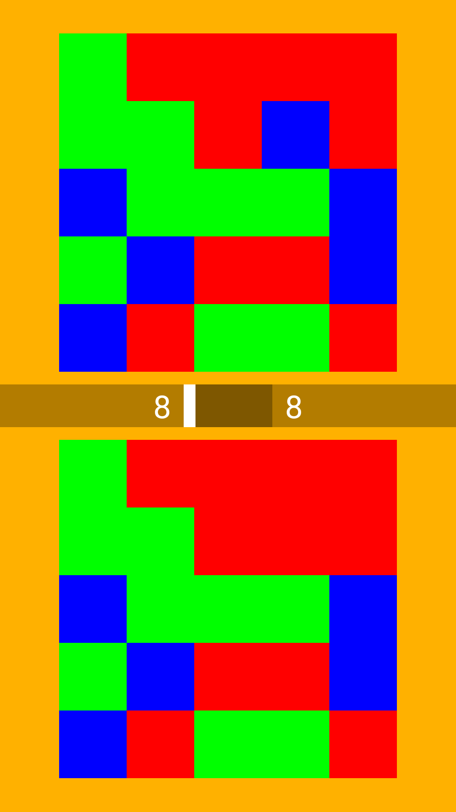
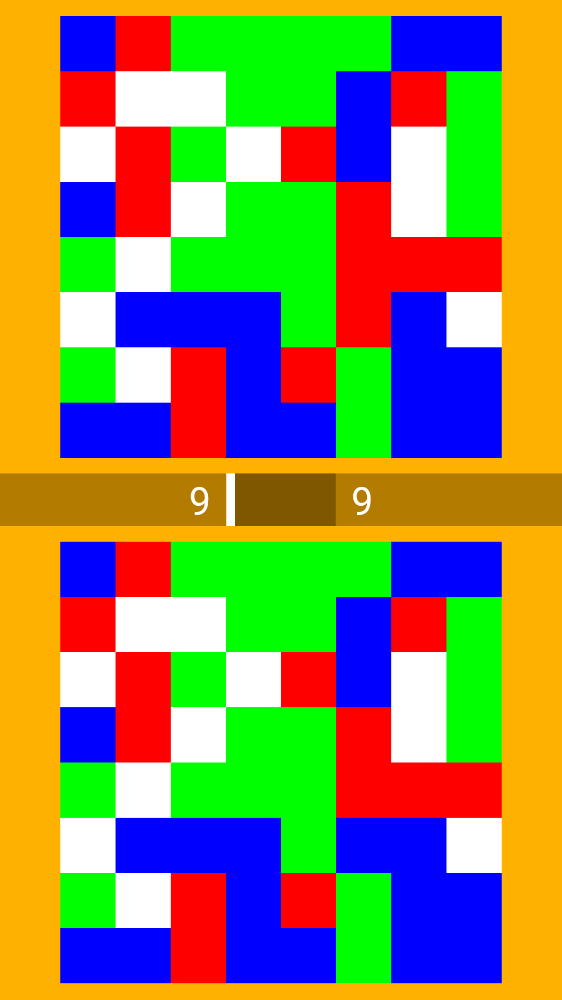
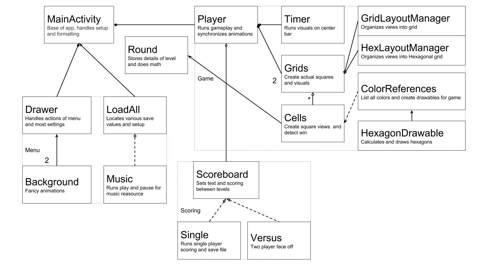
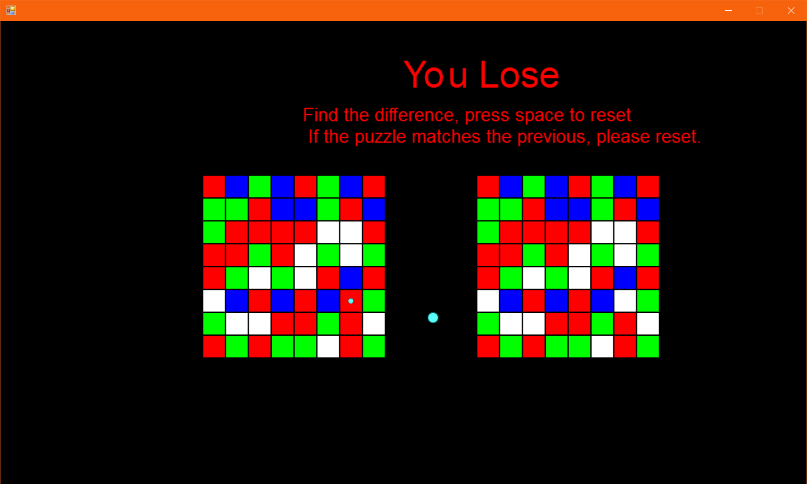

A game I started last year and my main published project. I built it using the default android SDK, tools designed more for static web apps then games. The game involves finding the difference out of two colored grids. Each grid is randomly generated, often bigger or more colorful than the last.
 Though somewhat sparingly, development continues, and I am working on a specific set of features. Firstly I am setting up some purchaseable expansion packs, such as an Expert mode and alternate Hexagonal grids. I will also be attempting an online scoreboard through Google Play, and possibly themed color packs.
Here is a diagram of the different classes involved in the app. MainActivity runs the base setup and system interaction in the app. Below that is various menu and background classes unrelated to gameplay. Player and those contained by it run the movement and operation of the game itself, Scoreboard sets the various messages shown in between the rounds.
The game was originally inspired by a short game jam I did at a summer camp. The main theme of the jam was that each round would be limited to ten seconds. In addition I personally had to make a puzzle game so I ended up with this idea. Ten seconds to find the difference between these two grids, grid can be any size.
As you can see it was very buggy and simple. Almost a year later I was showing it to a friend when I realized how good of a concept it made. Eventually I just made it into a mobile app.